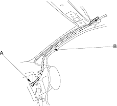
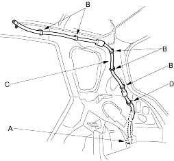
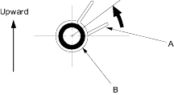

- To remove a front drain valve (A) from the body, remove the kick panel, left or right (see page 20-206). Tie a string to the end of the drain tube, then pull the front drain tube (B) down out of the front pillar.

- To remove a rear drain valve (A) from the trunk compartment, remove these parts:
Detach the clips (B) and release the rear drain tube (C) from the clip (D), then remove the drain tube.

- Install the frame and drain tube in the reverse order of removal and note these items:
- Before installing the frame, clear the drain tubes and drain valves using compressed air.
- Check the frame seal.
- Clean the surface of the frame.
- When installing the frame, first attach the rear hooks into the body holes.
- Make sure the connectors are plugged in properly.
- When connecting the drain tube, slide it over the frame nozzle at least 10 mm (0.39 in.).
- Install the tube clip (A) on the drain tube (B) as shown.

- Check for water leaks. Let the water run freely from a hose without a nozzle. Do not use a high-pressure spray.